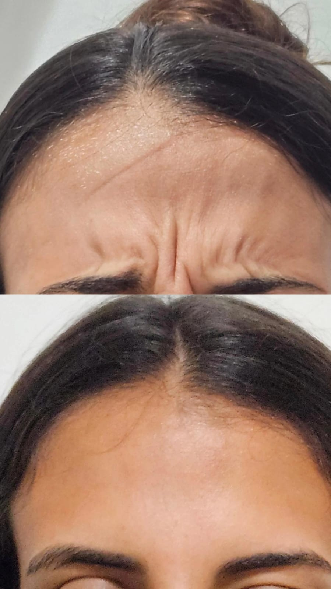
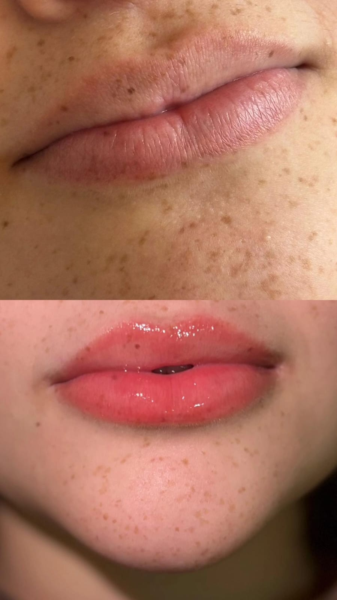
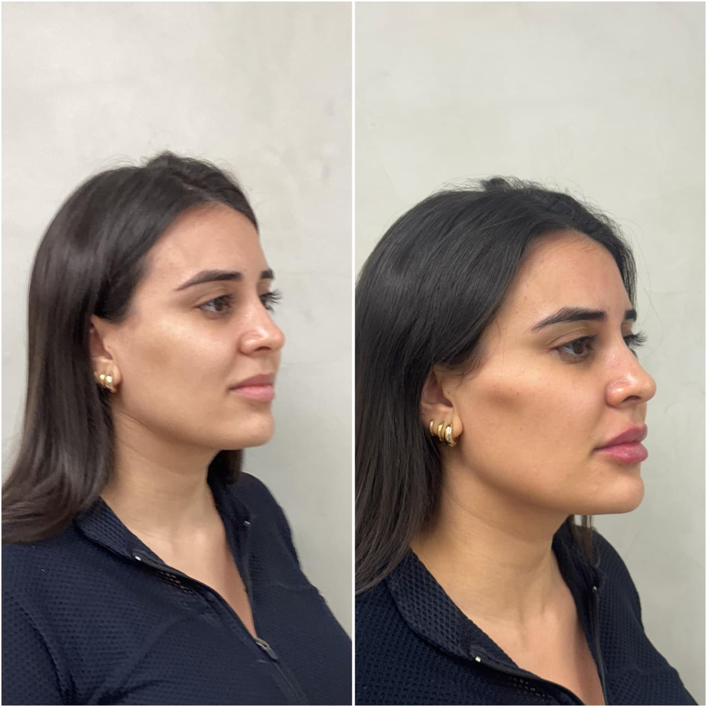
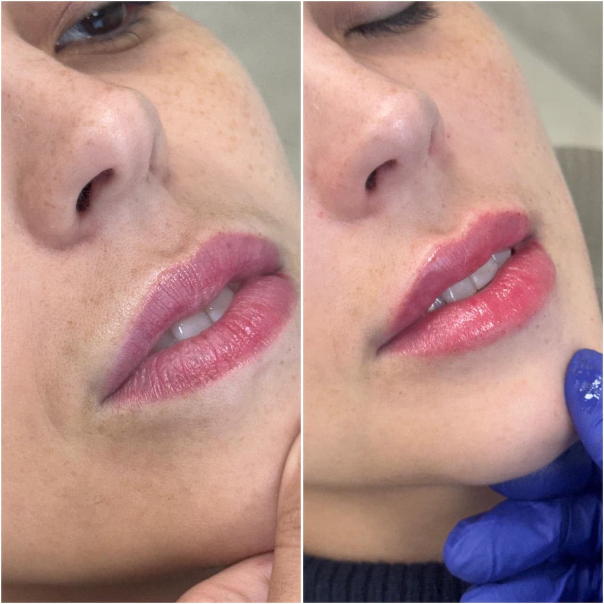
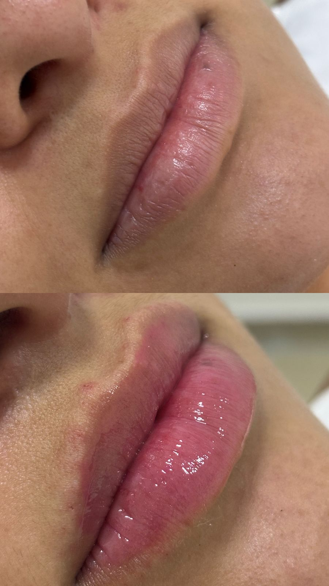
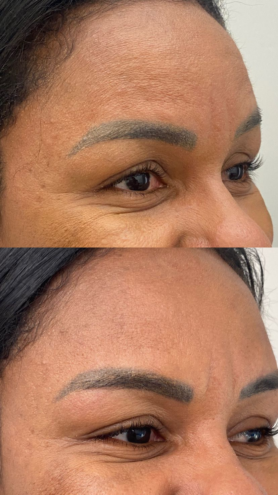
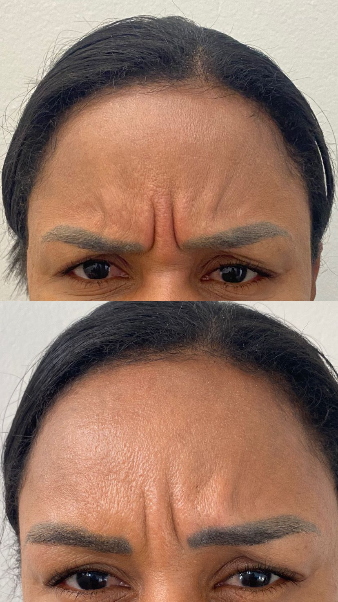
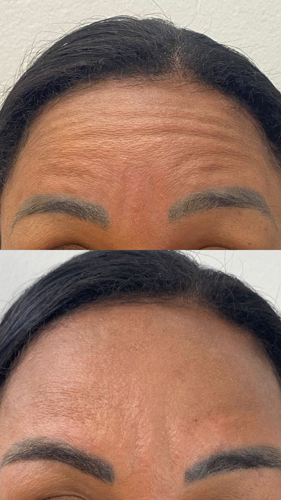

1. Avaliação inicial – A Dra. Letícia analisa o seu caso e indica o melhor tratamento para você.
Buscamos a harmonia, a estética facial e a autoestima que você merece. A Dra. Letícia Salvador une técnica e cuidado humanizado para realçar sua beleza.
Agende sua consultaAv. Tancredo Neves, 000 — Sala 000 | Salvador/BA
Recém-graduada em Odontologia pela Universidade Federal dos Vales do Jequitinhonha e Mucuri (UFVJM), a Dra. Letícia Salvador inicia sua trajetória profissional com uma formação marcada pelo rigor acadêmico e pela busca constante por excelência.
Atualmente cursa Mestrado pela UFVJM, aprofundando-se na pesquisa e na produção científica, e realiza Especialização em Odontologia Hospitalar pelo CEMOI (DF), ampliando sua atuação para o cuidado integral e de alta complexidade ao paciente.
Comprometida com a atualização contínua, complementa sua formação com cursos de Harmonização Orofacial (HOF) pelo Instituto Mariana Veloso e com o Dr. João Pithon, incorporando recursos que unem estética e funcionalidade aos tratamentos.
Aliando base científica sólida, dedicação ao aprimoramento e uma prática clínica humanizada, a Dra. Letícia Salvador oferece um atendimento atento e personalizado, com foco em resultados que impactam positivamente a saúde, a autoestima e a qualidade de vida de seus pacientes.

O botox é indicado para suavizar linhas de expressão e rugas, trazendo benefícios tanto estéticos quanto funcionais. Mais do que apenas rejuvenescer a aparência, ele age diretamente na musculatura facial, promovendo um relaxamento natural que preserva a harmonia dos traços. Além dos ganhos estéticos, o paciente conquista uma transformação na autoestima e na confiança, com resultados discretos e sofisticados que elevam a qualidade de vida no dia a dia. Outro ponto importante é o alívio de condições como bruxismo e enxaqueca, já que, em muitos casos, o botox auxilia no tratamento dessas queixas. Realizado com técnicas modernas e planejamento individualizado, o procedimento garante segurança, naturalidade e resultados cada vez mais duradouros. Assim, o paciente não apenas conquista uma aparência mais jovem e descansada, mas também uma versão mais equilibrada e confiante de si mesmo.
O preenchimento é indicado para restaurar volumes perdidos, suavizar rugas e realçar os contornos naturais do rosto. Mais do que preencher sulcos, ele reequilibra as proporções faciais, devolvendo uma aparência jovem e descansada sem alterar a essência do rosto. Além dos ganhos estéticos, o procedimento promove uma melhora significativa na autoestima, já que resultados naturais e harmoniosos refletem diretamente na confiança do dia a dia. Outro ponto importante é a praticidade: realizado em poucos minutos, com mínimo desconforto e sem necessidade de afastamento das atividades rotineiras. Com técnicas modernas e produtos de alta qualidade, o preenchimento oferece segurança, precisão e resultados que duram. Assim, o paciente conquista não apenas uma aparência mais jovem, mas também uma relação mais positiva com a própria imagem.

O botox e o preenchimento são procedimentos realizados com técnicas modernas que priorizam naturalidade e conforto.
No caso do botox, o procedimento ocorre em consultório, com aplicações precisas de pequenas doses da toxina botulínica nos pontos estratégicos do rosto. O profissional mapeia a musculatura facial e aplica o produto com agulhas finas, garantindo um resultado suave e sem expressões forçadas. O atendimento é rápido, sem necessidade de recuperação, e os efeitos começam a aparecer nos primeiros dias após a sessão.
Já o preenchimento é realizado com ácido hialurônico, aplicado com agulha ou cânula conforme a região tratada. O profissional modela o produto de forma precisa e controlada, respeitando a harmonia natural do rosto. Ambos os tratamentos são feitos com acompanhamento especializado, assegurando segurança, conforto e resultados duradouros.
1. Avaliação inicial – A Dra. Letícia analisa o seu caso e indica o melhor tratamento para você.
2. Planejamento personalizado – Explicação detalhada de cada etapa do procedimento.
3. Procedimento com segurança – Aplicações realizadas com técnica, tecnologia e precisão.
4. Acompanhamento – Suporte para a sua recuperação ser tranquila e o resultado, duradouro.






Trabalhamos com técnicas modernas e anestesia para garantir o máximo de conforto. A maioria dos procedimentos é tranquila e bem tolerada.
O atendimento é particular, com planos de pagamento facilitados. Entre em contato para conhecer as condições.
Na primeira consulta conversamos sobre suas queixas e objetivos, fazemos o exame clínico e, se necessário, solicitamos exames para montar o plano de tratamento.
É só clicar no botão de agendamento ou chamar pelo WhatsApp. Nossa equipe ajuda a encontrar o melhor horário para você.